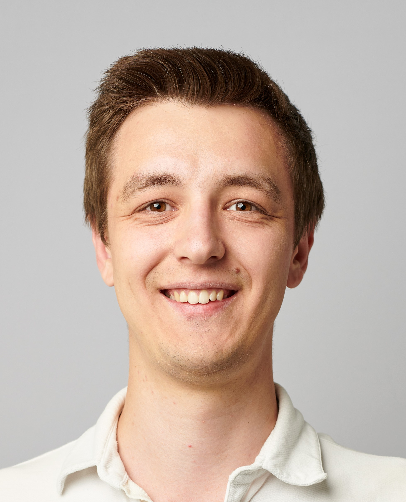

Multimodal search & analysis platform
Image and text retrieval over millions of enterprise assets. Took it from a PoC that couldn't ship to a stable multi-client product, deployed both on-prem and in the cloud.
 FastAPI
FastAPI Celery
Celery RabbitMQ
RabbitMQ Docker
Docker
AI / Computer Vision engineer. I build scalable AI-based systems and take them from proof of concept to stable production.

Image and text retrieval over millions of enterprise assets. Took it from a PoC that couldn't ship to a stable multi-client product, deployed both on-prem and in the cloud.
Moved retrieval from an in-memory HNSW index (Weaviate) to PostgreSQL with pgvector and DiskANN, and lowered the embedding dimensionality without significant quality loss. Result: the AWS bill fell by 90%.
Object detection and region-of-interest extraction for print and packaging artwork, tuned for high recall. Includes a rule-based surface inspector that replaced an AI model: over 10× faster (7.5 s → 0.6 s per sheet), no GPU needed to run on-prem.
Finds designs that differ from the query by just a few pixels, down to a single one: the same packaging without a tiny technical mark, or with one small extra logo. The search takes seconds; comparing every pixel against every file in the archive directly would take hours to days.
JWT authentication, three access roles and rate limiting; Prometheus and Grafana monitoring; AWS EC2 deployments with CloudFormation; a bash installer/updater that sets up or upgrades a full customer deployment, and a CI/CD pipeline that builds all Docker images per release, plus an automated test pipeline covering every API endpoint.
Requirements analysis, integration workshops and hands-on rollout with clients and internal stakeholders, because a system only counts once someone uses it.
Full case study →B.Sc. Computer Engineering
National Aerospace University, Kharkiv, Ukraine
09/2013 – 06/2017